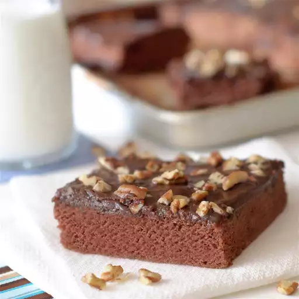

G.G.'s Chocolate Sheet Cake

Description
This is my great-grandmother's recipe that she passed down to me, and it is quite simply the best chocolate dessert I have ever had. It's so simple and so yummy! Beware--if you bring this to a party it will go fast!
Ingredients
- 2 cups white sugar
- 2 cups all-purpose flour
- 1 cup butter, melted
- 2 eggs
- 3 tablespoons unsweetened cocoa powder
- ½ cup buttermilk
Steps
- Preheat an oven to 350 degrees F (175 degrees C). Grease an 11x17 jelly roll pan.
- Mix white sugar and flour in a large bowl. Combine 1 cup butter, water, and 3 tablespoons cocoa powder in a small saucepan; stir over medium heat until butter is melted and mixture is well combined. Pour melted butter mixture over sugar and flour; beat well. Beat in baking soda, buttermilk, eggs, and vanilla extract. Pour batter into prepared pan.
- Bake in preheated oven until a toothpick inserted into the center of cake comes out clean, 20 to 25 minutes. Remove from oven and allow to cool on a wire rack.